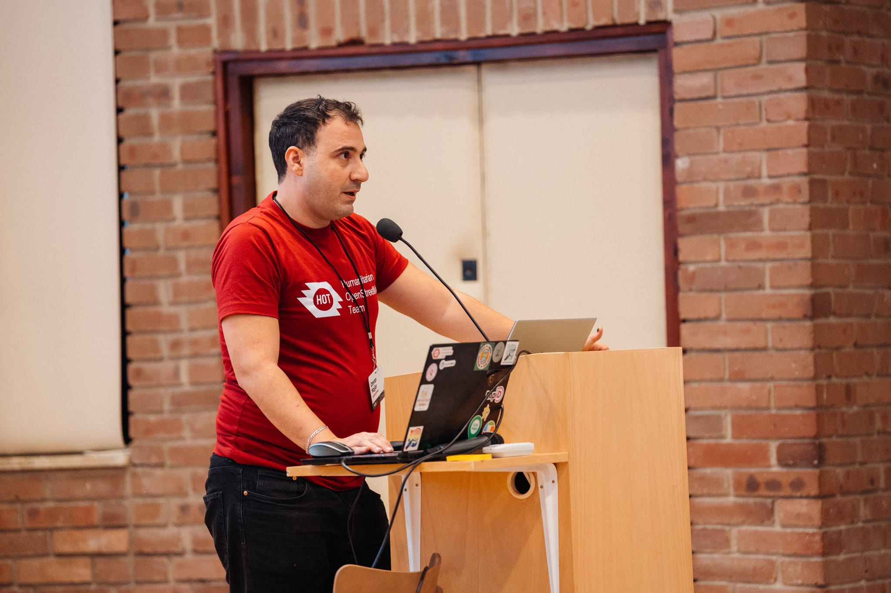

HITS25 — Humanitarian Demining Innovation & Technology Summit
Attendee · Humanitarian OpenStreetMap Team


Attended HITS25 — Minesight's Mine Action Innovation and Technology Summit — in Kraków, Poland. The summit brought together operators, technologists, policymakers, and researchers to explore practical roadmaps for deploying data, AI, and digital tools in humanitarian demining (landmine and explosive ordnance clearance) operations. The 2025 edition focused on moving beyond conceptual innovation toward real-world deployment, identifying the barriers and enabling conditions for technology adoption in mine action.
Key themes included AI for landmine prediction and survey prioritization, the role of geospatial data in evidence-based clearance planning, shared data infrastructure, and the importance of operational reality in shaping technology design — a theme directly aligned with HOT's experience deploying AI tools in humanitarian contexts.
Minesight — HITS25 organizer LinkedIn post — Kateryna Drozd on HITS25